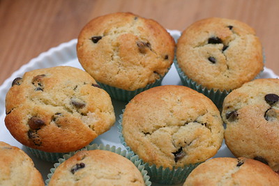

Home
Chocolate Chip Muffins

Description
A simple and quick recipe to make delicious chocolate chip muffins.
You have to try it out. You won't regret it!!!
Ingredients
- Three-quartes of a cup of milk
- A half of a cup of vegetable oil
- 1 large egg
- 2 cups all-purpose flour
- A half of a cup of white sugar
- 2 teaspoons baking powder
- A half of a cup of teaspoon salt
- Three-quarters of a cup of mini semi-sweet chocolate chips
- 1 and a half of tablespoons white sugar
- 1 tablespoon brown sugar
Steps
- Gather all ingredients. Preheat the oven to 400 degrees
F (200 degrees C). Grease a 12-cup muffin tin or line cups with
paper liners.
- Combine milk, oil, and egg in a small bowl until well blended.
- Combine flour, 1/2 cup sugar, baking powder, and salt together in a large bowl, making a
well in the center.
- Pour milk mixture into well and stir until batter is just combined;
fold in chocolate chips.
- Spoon batter into the prepared muffin cups, filling each 2/3 full.
- Combine 1 and a half tablespoons of white sugar and
one tablespoon brown sugarin a small bowl; sprinkle
on tops of muffins.
- Bake in the preheated oven until tops spring back when lightly pressed, about
18 to 20 minutes.
- Cool in the tin briefly, then transfer to a wire rack. Serve warm or cool completely.